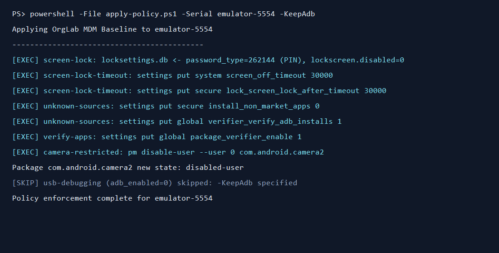

Results — before vs after
45% → 85%
Managed device (Device A)
25%
Unmanaged baseline (Device B)
8 / 8
controls remediated on A except USB debugging (staged)

Device A after policy: PIN lock present.

Enforcement run — every action logged.